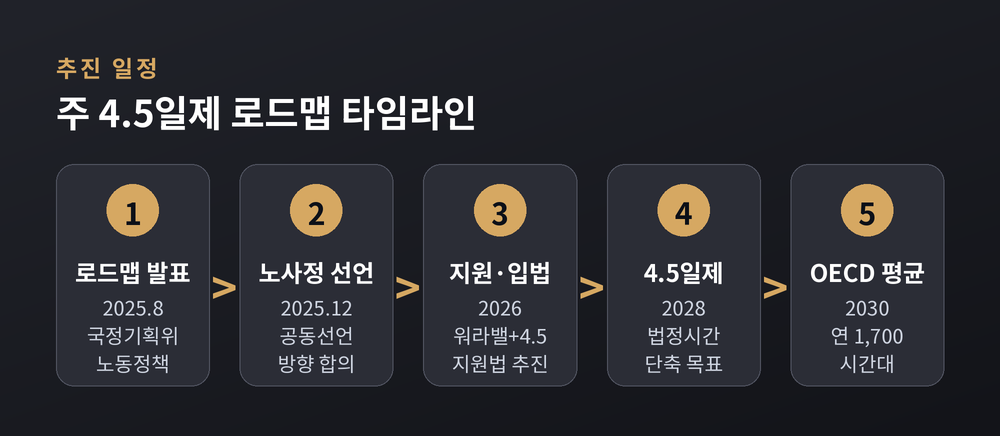
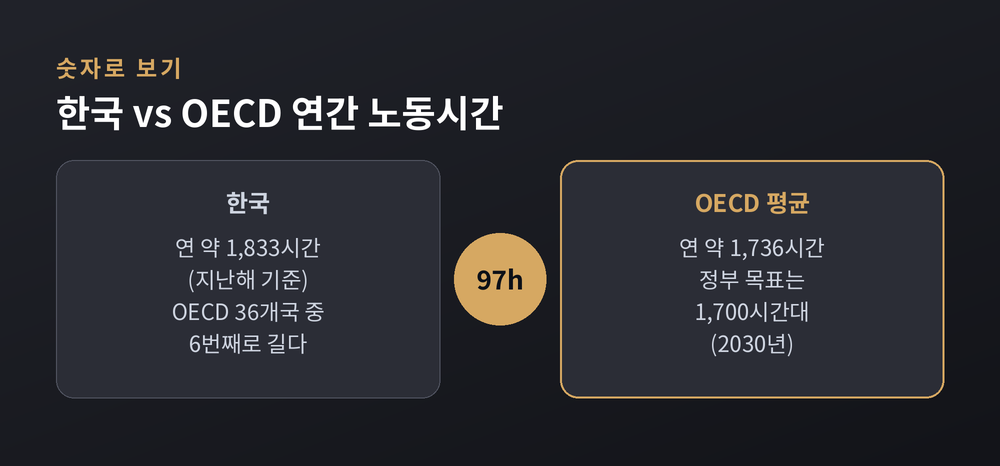
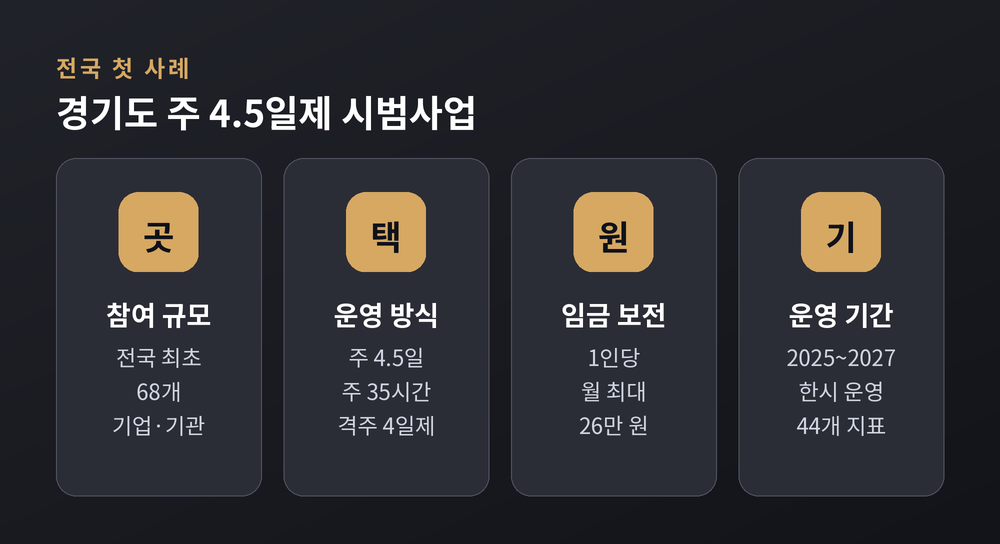
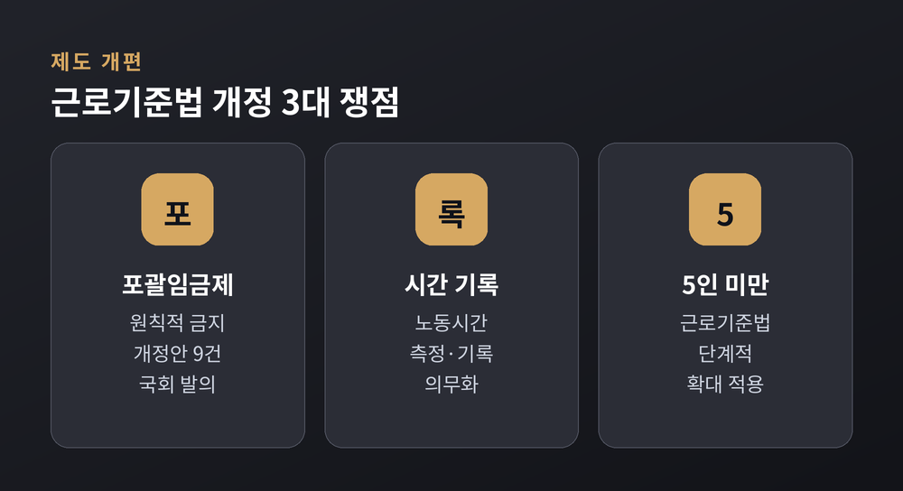
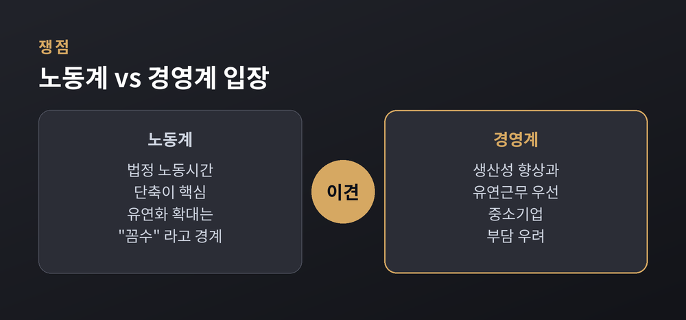

주 4.5일제 로드맵 정리 — 노동시간 단축과 근로기준법 개정, 어디까지 왔나
이번 글에서는 이재명 정부가 추진 중인 주 4.5일제 로드맵과 근로기준법 개정 논의를 정리해 보겠습니다. 무슨 일이 진행되고 있는지, 왜 중요한지, 노사 양측이 무엇을 두고 맞서는지 차례로 짚겠습니다. 민감한 사안인 만큼 노동계와 경영계 입장을 함께 담았습니다.
먼저 결론부터 말씀드립니다. 정부는 2030년까지 실노동시간을 OECD 평균 수준인 연 1,700시간대로 줄이는 것을 목표로 삼았습니다. 그 중간 관문이 2028년 법정 노동시간 단축을 통한 주 4.5일제 도입입니다. 아직 법으로 확정된 것은 아니고, 로드맵과 시범사업 단계에 있습니다.
무슨 일이 벌어지고 있나
출발점은 2025년 8월입니다. 대통령 직속 국정기획위원회가 노동정책 로드맵을 내놨습니다. 뼈대는 세 가지입니다. 주 4.5일제를 임기 안에 도입하고, 법정 노동시간을 OECD 평균까지 낮추며, 5인 미만 사업장에도 근로기준법을 단계적으로 적용한다는 것입니다.
말로 그친 계획은 아닙니다. 고용노동부는 2025년 9월 '실노동시간 단축 로드맵 추진단'을 꾸렸습니다. 약 석 달, 스물다섯 차례의 대화를 거쳤습니다. 그 결과가 2025년 12월 30일 발표된 노사정 공동선언입니다. 정부와 한국노총·민주노총, 경총·중소기업중앙회가 한자리에 모여 방향에 뜻을 모았습니다.
2026년은 이행의 해입니다. 로드맵 이행 점검단이 출범했고, '실근로시간단축지원법' 입법이 추진되고 있습니다.

왜 지금 중요한가 — 숫자로 보는 노동시간
한국은 여전히 오래 일하는 나라입니다. 통계 기준에 따라 조금씩 다르지만, 지난해 연간 노동시간은 약 1,833시간으로 집계됐습니다. 같은 해 OECD 평균은 약 1,736시간이었습니다. 우리가 100시간 가까이 더 일한 셈입니다.
물론 흐름은 줄어드는 쪽입니다. 1988년 2,934시간을 정점으로 꾸준히 내려왔습니다. 다만 속도가 문제입니다. OECD 36개국 가운데 여섯 번째로 길다는 사실은 아직 갈 길이 남았음을 보여줍니다.
예전엔 '얼마나 많이 일하는가'가 미덕이었습니다. 지금은 '어떻게 덜 일하고도 성과를 내는가'가 화두입니다. 이 변화가 주 4.5일제 논의의 배경입니다.

2026년 지원책과 경기도 시범사업
정부는 강제보다 유인을 앞세웠습니다. 2026년 신설된 '워라밸+4.5 프로젝트'가 대표적입니다. 노사가 합의해 임금 삭감 없이 주 4.5일제 등으로 노동시간을 줄이면, 해당 노동자 1인당 연간 최대 720만 원을 지원합니다. 병원처럼 생명·안전과 직결된 업종, 교대제를 개편하는 기업, 비수도권 사업장에는 월 10만 원을 더 얹습니다. 신규 채용을 늘리면 1인당 연간 최대 960만 원까지 지원이 커집니다. 이 로드맵 과제에 투입되는 2026년 예산은 9,363억 원 규모입니다.
지방정부가 먼저 실험대에 올랐습니다. 경기도는 2025년 6월 전국 처음으로 주 4.5일제 시범사업을 시작했습니다. 민간기업 67곳에 경기콘텐츠진흥원 같은 공공기관을 더해 모두 68개 기업·기관이 참여합니다. 방식은 하나로 묶지 않았습니다. 요일을 자율로 고르는 주 4.5일, 주 35시간, 격주 4일제 가운데 형편에 맞게 택합니다.
핵심은 '임금은 그대로, 시간만 단축'입니다. 참여 노동자에게는 1인당 월 최대 26만 원의 임금 보전을, 기업에는 최대 2,000만 원의 컨설팅을 지원합니다. 2025년부터 2027년까지 한시로 운영하며, 노동생산성과 직무만족도 등 44개 지표로 성과를 따집니다.

근로기준법, 무엇이 바뀌나
노동시간 단축은 근로기준법 개정과 맞물려 있습니다. 쟁점은 크게 셋입니다.
첫째, 포괄임금제의 원칙적 금지입니다. 국회에는 관련 개정안이 아홉 건 발의돼 있습니다. 고용노동부는 2026년 4월 포괄임금 오남용 방지 지침을 내놓아, 실제 일한 시간에 맞춰 수당을 계산하고 임금 항목을 구분해 적도록 요구했습니다.
둘째, 노동시간 측정·기록의 의무화입니다. 포괄임금제를 손보려면 실제로 몇 시간 일했는지 남는 기록이 있어야 합니다. 정부는 이를 법으로 못 박고, 디지털 방식의 기록 체계를 갖추도록 하겠다는 방침입니다.
셋째, 5인 미만 사업장으로의 확대입니다. 지금 5인 미만 사업장은 근로기준법 적용을 받지 않아 주 52시간제나 연장·야간수당의 보호 밖에 있습니다. 정부는 2025년 하반기 직장 내 괴롭힘 금지와 모성보호부터 적용하고, 2027년 상반기에는 유급·대체공휴일과 연차 유급휴가로 범위를 넓힐 계획입니다.

노사는 어디서 갈라지나
같은 목표를 두고도 길이 갈립니다. 여기서는 양측 목소리를 그대로 전하겠습니다.
노동계는 '법정 노동시간 단축'이 본질이라고 봅니다. 민주노총은 "법정 근로시간 단축 없는 주 4.5일제와 유연근로제는 쉴 권리와 무관하며 오히려 건강을 해친다"고 주장합니다. 한국노총도 "4.5일제를 핑계로 유연근로제를 넓혀 주 52시간제를 푸는 것은 장시간·압축노동을 부르는 꼼수"라고 경계합니다.
경영계의 셈법은 다릅니다. 경총은 법정근로시간을 줄이면 "기업 경쟁력 저하, 인건비 부담, 대·중소기업 격차 심화" 같은 부작용이 크다고 봅니다. 노동생산성이 낮은 상황에서 시간부터 줄이면 감당이 어렵다는 것입니다. 그래서 연장근로 관리단위 확대와 유연근무처럼, 노사가 시간을 유연하게 고르는 방식이 먼저라고 말합니다.
또 하나의 우려는 격차입니다. 대기업·공공기관은 임금을 보전받지만, 중소·영세기업 노동자는 오히려 소득이 줄어 '제3의 양극화'가 생길 수 있다는 지적입니다. 저는 이 대목이 제도의 성패를 가를 지점이라고 생각합니다.

앞으로의 전망
합의된 부분과 남은 부분이 뚜렷합니다. 노사정은 포괄임금 오남용 방지, 근무시간 외 업무지시로부터의 휴식, 야간노동자 건강보호, 연차휴가 활성화 같은 과제에는 뜻을 모았습니다. 반면 법정노동시간 자체, 연장근로 관리단위, 수당 할증률, 연차휴가 저축제도 등은 이견이 커 추가 논의로 넘겼습니다.
정부는 실근로시간단축지원법 입법을 서두르고, 2028년 법정 노동시간 단축을 매개로 주 4.5일제를 제도화하려 합니다. 경기도 시범사업 결과가 2027년 나오면, 전국 확대의 근거가 될지도 판가름 날 것입니다.
아직 완성된 그림은 아닙니다. 핵심 쟁점일수록 노사의 거리가 멀고, 법으로 옮겨질 때마다 진통이 예상됩니다.
정리하면 이렇습니다. 방향은 '더 적게 일하고도 지속 가능한 사회'로 향해 있지만, 속도와 방법에는 합의가 남았습니다.
— 결국 관건은 "누구의 시간을, 누구의 부담으로 줄일 것인가"입니다.
숫자가 줄어드는 것만으로 삶이 나아지지 않는다면, 우리가 물어야 할 것은 시간의 길이가 아니라 시간의 질이 아닐까 합니다.